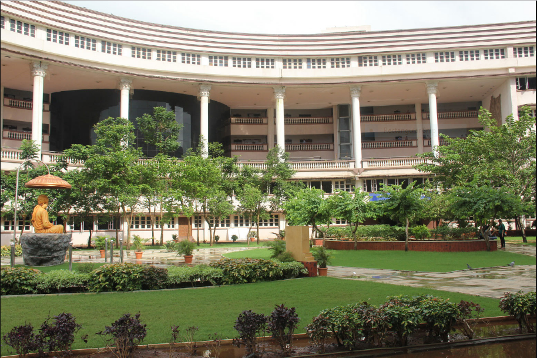

ABOUT OUR COLLEGE

Vivekanand Education Society was founded in 1959 by Shri. Hashu Advani, along with ten other members, who shared the dream of providing qualitative education to the youth of our country. In the beginning, Vivekanand Education Society had a very modest launch, with just 256 students and six classrooms, in the humble barracks of Chembur Camp.
Vivekanand Education Society’s Institute of Technology (VESIT) was established in 1984, with the aim of providing professional education in the field of Engineering.
This project is made by students of VESIT. We are currently a 2nd year undergraduate in Engineering in Artificial Intelligence and Data Science.
This project could not have been possible without the support, help and guidance of our mentor Dr. Anjali Yeole.